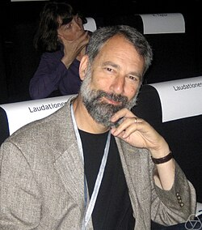

Charles Fefferman | |
|---|---|
 | |
| Born | April 18, 1949 Washington, D.C., U.S. |
| Alma mater | University of Maryland, College Park Princeton University |
| Awards |
|
| Scientific career | |
| Fields | Mathematics |
| Institutions | Princeton University, University of Chicago |
| Thesis | Inequalities for Strongly Singular Convolution Operators (1969) |
| Elias Stein | |
Doctoral students | Matei Machedon Luis A. Seco |
{kind=link}
Charles Louis Fefferman (born April 18, 1949) is an American mathematician at Princeton University, where he is currently the Herbert E. Jones, Jr. '43 University Professor of Mathematics. He was awarded the Fields Medal in 1978 for his contributions to mathematical analysis.
Early life and education
Fefferman was born to a Jewish family,[1][2] in Washington, DC. He was a child prodigy, entered the University of Maryland at age 14,[3][4][7] and had written his first scientific paper by the age of 15.[3] He graduated with degrees in math and physics at 17,[8] and earned his PhD in mathematics three years later from Princeton University, under Elias Stein. His doctoral dissertation was titled "Inequalities for strongly singular convolution operators".[9] Fefferman achieved a full professorship at the University of Chicago at the age of 22, making him the youngest full professor ever appointed in the United States.[6]
Career
At the age of 25, he returned to Princeton as a full professor, becoming the youngest person to be promoted to the title.[10] He won the Alan T. Waterman Award in 1976[4] (the first person to get the award) and the Fields Medal in 1978 for his work in mathematical analysis, specifically convergence and divergence.[3] He was elected to the National Academy of Sciences in 1979.[11] He was appointed the Herbert Jones Professor at Princeton in 1984.
In addition to the above, his honors include the Salem Prize in 1971, the Bergman Prize in 1992,[12] the Bôcher Memorial Prize in 2008,[13] and the Wolf Prize in Mathematics for 2017,[14] as well as election to the American Academy of Arts and Sciences and the American Philosophical Society.[15][16] In 2021 he was awarded the BBVA Foundation Frontiers of Knowledge Award in Basic Sciences.[17]
Fefferman contributed several innovations that revised the study of multidimensional complex analysis by finding fruitful generalisations of classical low-dimensional results. Fefferman's work on partial differential equations, Fourier analysis, in particular convergence, multipliers, divergence, singular integrals and Hardy spaces earned him a Fields Medal at the International Congress of Mathematicians at Helsinki in 1978.[18] He was a Plenary Speaker of the ICM in 1974 in Vancouver.[19]
His early work included a study of the asymptotics of the Bergman kernel off the boundaries of pseudoconvex domains in .[20] He has studied mathematical physics, harmonic analysis, fluid dynamics, neural networks, geometry, mathematical finance and spectral analysis, amongst others.
Family
Fefferman and his wife Julie have two daughters, Nina and Lainie. Lainie Fefferman is a composer, taught math at Saint Ann's School and holds a degree in music from Yale University and a Ph.D. in music composition from Princeton.[21] She has an interest in Middle Eastern music.[22] Nina Fefferman is a computational biologist at the University of Tennessee who studies the application of mathematical models to biological systems.[23]
Fefferman's brother, Robert Fefferman, is also a mathematician and former Dean of the Physical Sciences Division at the University of Chicago.[24] Fefferman is also the nephew of mathematician Abe Gelbart.[25]
Works
The following are among Fefferman's best-known papers:
- Fefferman, Charles (1970), "Inequalities for strongly singular convolution operators", Acta Mathematica, 124: 9–36, doi:10.1007/bf02394567
- Fefferman, Charles (1971), "The multiplier problem for the ball", Annals of Mathematics, 94 (2): 330–336, doi:10.2307/1970864, JSTOR 1970864
- Fefferman, C.; Stein, E. M. (1971), "Some maximal inequalities", American Journal of Mathematics, 93 (1): 107–115, doi:10.2307/2373450, JSTOR 2373450
- Fefferman, C.; Stein, E. M. (1972), "Hp spaces of several variables", Acta Mathematica, 129: 137–193, doi:10.1007/bf02392215
- Coifman, R.; Fefferman, C. (1974), "Weighted norm inequalities for maximal functions and singular integrals", Studia Mathematica, 51 (3): 241–250, doi:10.4064/sm-51-3-241-250
- Fefferman, Charles (1974), "The Bergman kernel and biholomorphic mappings of pseudoconvex domains", Inventiones Mathematicae, 26 (1): 1–65, Bibcode:1974InMat..26....1F, doi:10.1007/bf01406845, S2CID 125007742
- Fefferman, Charles L. (1983), "The uncertainty principle", Bulletin of the American Mathematical Society, 9 (2): 129–206, doi:10.1090/s0273-0979-1983-15154-6
- Donnelly, Harold; Fefferman, Charles (1983), "L2-cohomology and index theorem for the Bergmann metric", Annals of Mathematics, 118 (3): 593–618, doi:10.2307/2006983, JSTOR 2006983
- Constantin, P.; Fefferman, C.; Majda, A. J. (1996), "Geometric constraints on potentially singular solutions for the 3-D Euler equations", Communications in Partial Differential Equations, 21 (3–4): 559–571, doi:10.1080/03605309608821197
- Fefferman, Charles (2005). "A sharp form of Whitney's extension theorem". Annals of Mathematics. 161 (1): 509–577. doi:10.4007/annals.2005.161.509. ISSN 0003-486X.
References
- ^ The Jewish lists: physicists and generals, actors and writers, and hundreds of other lists of accomplished Jews, Martin Harry Greenberg, (Schocken, 1979), page 110
- ^ American Jewish Year Book 2017: The Annual Record of the North American Jewish Communities, Arnold Dashefsky, Ira M. Sheskin, (Springer, 2018), page 796
- ^ a b c "Interview with Charles Fefferman - OpenMind". OpenMind. 2014-01-07. Retrieved 2017-10-22.
- ^ a b Haitch, Richard (1976-07-04). "Charlie Fefferman, Princeton mathematician, and an equation in his hand". The New York Times. ISSN 0362-4331. Retrieved 2017-10-22.
- ^ "Q and A with Prof. Charles Fefferman GS '69". The Princetonian. Retrieved 2017-10-22.
- ^ a b Schumacher, Edward (February 27, 1979). "A prodigy keeps young by just thinking". The Philadelphia Inquirer. p. 21. Retrieved 2017-10-22.
- ^ Some sources say age 12.[5][6]
- ^ "Hall Of Fame". University of Maryland Alumni Association. 2016-05-24. Retrieved 2017-10-22.
- ^ Fefferman, Charles (1969). Inequalities for strongly singular convolution operators.
- ^ "Two named to endowed chairs". pr.princeton.edu. June 8, 1998. Retrieved February 13, 2020.
- ^ "Charles Fefferman". www.nasonline.org. Retrieved 2017-10-22.
- ^ "American Mathematical Society". www.ams.org. Retrieved 2017-10-22.
- ^ "2008 Bôcher Prize" (PDF). American Mathematical Society. 2008. Retrieved 2017-10-22.
- ^ "Wolf Prize to be awarded to eight laureates from US, UK and Switzerland". The Jerusalem Post. ISSN 0792-822X. Retrieved 2017-10-22.
- ^ "Charles Louis Fefferman". American Academy of Arts & Sciences. Retrieved 2022-04-28.
- ^ "APS Member History". search.amphilsoc.org. Retrieved 2022-04-28.
- ^ BBVA Foundation Frontiers of Knowledge Award 2021
- ^ Carleson, Lennart. "The work of Charles Fefferman." Archived 2017-12-07 at the Wayback Machine Proceedings of the International Congress of Mathematicians, Helsinki, 1978. vol. 1: 53–56.
- ^ Fefferman, Charles. "Recent progress in classical Fourier analysis." Archived 2013-12-28 at the Wayback Machine Proceedings of the International Congress of Mathematicians, Vancouver, 1974. vol. 1: 95–118.
- ^ (Donnelly & Fefferman 1983)
- ^ "At Hooding, advanced-degree recipients, advisers celebrate a long, successful journey". Princeton University. Retrieved 2017-10-22.
- ^ "Lainie Fefferman". lainiefefferman.com. Retrieved 2017-10-22.
- ^ "Fefferman Lab". Retrieved 2019-04-08.
- ^ "Deans | Office of the President | the University of Chicago". Archived from the original on 2012-02-04. Retrieved 2012-01-29. Robert Fefferman webpage at the University of Chicago Office of the President
- ^ Fefferman, Charles L. (1984-04-14). "Twentieth Century Geometry". Bard Digital Commons.
External links
- O'Connor, John J.; Robertson, Edmund F., "Charles Fefferman", MacTutor History of Mathematics Archive, University of St Andrews
- Charles Fefferman at the Mathematics Genealogy Project
- Charles Fefferman Curriculum Vitae
- Córdoba, Antonio (December 2017). "Ad Honorem Charles Fefferman" (PDF). Notices of the American Mathematical Society. 64 (11): 1254–1273. doi:10.1090/noti1606.
- "Charles Fefferman - Waves, Spectral Theory, and Applications Conference". YouTube. Applied Mathematics. November 24, 2015.
- "Charles Fefferman : Whitney problems and real algebraic geometry". YouTube. Centre International de Recontres Mathématiques. December 1, 2015.
- "Charles Fefferman - Formation of singularities in fluid interfaces". YouTube. princetonmathematics. December 21, 2015.
- "GPDE Workshop - Alexakis' theorem on conformally invariant integrals - Charles Fefferman". YouTube. Institute for Advanced Study. September 2, 2016.
- "Fitting manifolds to data - Charlie Fefferman". YouTube. Institute for Advanced Study. April 7, 2018.
- "The Heidelberg Laureate Forum Foundation presents the HLF Portraits: Charles Fefferman". YouTube. Heidelberg Laureate Forum. February 18, 2019.
- "Great Thinker: Charles Fefferman | March 11, 2015". YouTube. The Frumkes Center. September 2020.
- "JQI Seminar March 22, 2021: Charles Fefferman". YouTube. JQInews. March 22, 2021.
- "ICMAT Distinguished Lectures - Charles Fefferman". YouTube. Instituto de Ciencias Matemáticas ICMAT. October 15, 2021.